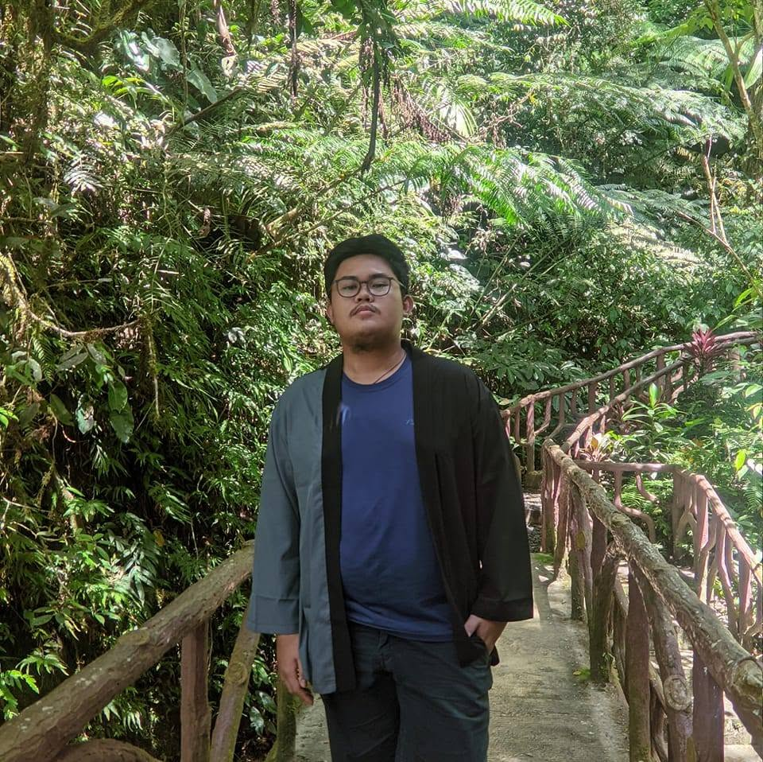

> Hello, I am
Lean
Murillo.
Computer Science student at the University of Mindanao, specializing in front-end development and crafting intuitive user experiences.

Front End Developer
I'm a UI/UX designer and front-end developer who bridges the gap between beautiful design and functional code. Three years of building products that people actually love to use. My work lives at the intersection of systems thinking and visual craft — I care about the grid as much as the pixel, the component as much as the concept.
The Background
Currently studying Computer Science at the University of Mindanao. My journey started with a fascination for digital interfaces, which quickly evolved into a deep dive into web development and UI/UX architecture.
Short-Term
- ▹ Master modern state management in SPAs.
- ▹ Land a front-end internship to contribute to production-level codebases.
- ▹ Build fully accessible, highly animated web applications.
Long-Term
To become a Lead Front-End Engineer who architects scalable design systems. I want to build digital products that set industry standards for performance, accessibility, and breathtaking user experiences.